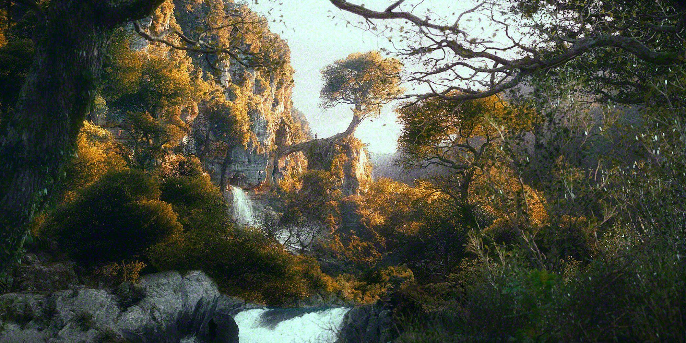
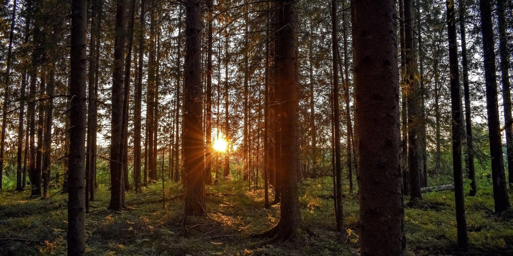

Un bosque es un ecosistema donde la vegetación predominante la constituyen los árboles y arbustos1.
Es una asociación vegetal conformada por una amplia gama de vegetación, incluyendo no solo árboles y arbustos,
sino también vegetales como la hierba, las flores y hasta por las deposiciones orgánicas de éstas plantas en el suelo,
como las ramas o las hojas caídas, que contribuyen a la riqueza del suelo.


Estas comunidades de plantas cubren grandes áreas de la Tierra y constituyen hábitats para los animales,
son moduladores de flujos hidrológicos y conservadores del suelo, constituyendo uno de los aspectos más relevantes
de la biosfera del globo terráqueo.